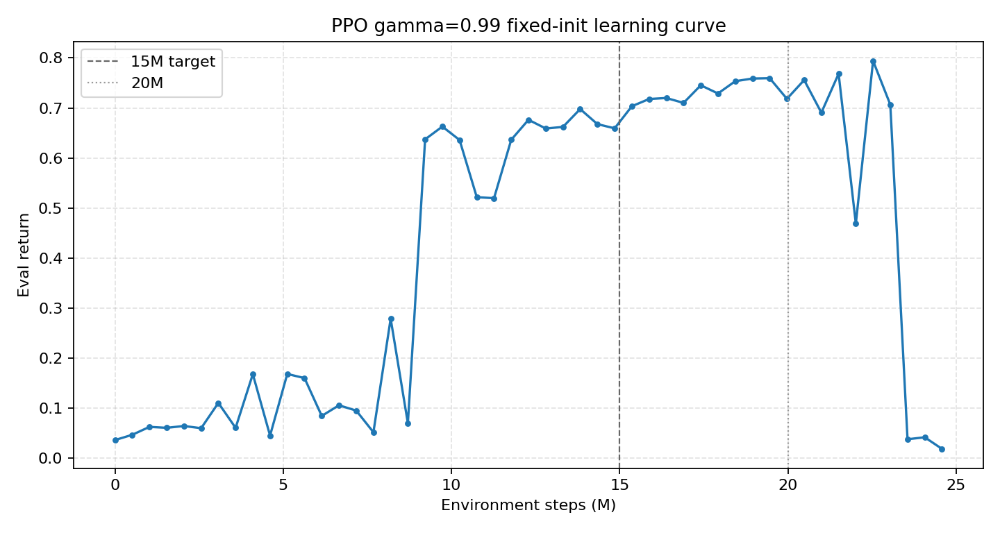

TCP return reward を translation error のみの線形報酬にした実験の中間まとめ。
PPO は 15M 相当の 160 env 評価まで完了。SAC は utd=0.05 と
utd=0.25 が序盤で弱く、PPO 完了後に utd=0.5 を単独実行予定。
| run | 条件 | eval return | open success | final open | box shift | final TCP position error | final arm mean abs error |
|---|---|---|---|---|---|---|---|
| 旧PPO 15M | gamma=0.8, robot_init_noise_scale=1.0 |
70.972000 | 1.000000 | 0.149722 | 0.000812 | 0.151295 | 1.148516 rad |
| 新PPO 15M相当 | gamma=0.99, robot_init_noise_scale=0.0, checkpoint ckpt_146.pt |
65.634911 | 1.000000 | 0.148244 | 0.001366 | 0.254236 | 0.708558 rad |
| 新PPO ckpt_196 | gamma=0.99, robot_init_noise_scale=0.0, 約20M |
71.529259 | 1.000000 | 0.145115 | 0.001188 | 0.190292 | 0.638155 rad |
| 新PPO ckpt_221 | gamma=0.99, robot_init_noise_scale=0.0, 約22.6M |
79.419594 | 1.000000 | 0.129553 | 0.000003 | 0.135180 | 0.692767 rad |
| 新PPO 25M final | gamma=0.99, robot_init_noise_scale=0.0, final_ckpt.pt |
7.433212 | 0.037500 reached / 0.050000 final | 0.765711 | 0.946338 | 0.318852 | 0.822133 rad |
SAC utd=0.05 |
gamma=0.99, robot_init_noise_scale=0.0, stopped after weak early learning |
0.004-0.012 range through 6M train eval | 未到達 | 未評価 | 未評価 | 未評価 | 未評価 |
SAC utd=0.25 |
gamma=0.99, robot_init_noise_scale=0.0, stopped after 500k train eval |
0.005711 at 500k | 未到達 | 未評価 | 未評価 | 未評価 | 未評価 |
新PPOは 9M 以降に立ち上がり、20M 前後までは比較的高い return を維持したが、 23.5M 以降で急落した。25M final は箱ずれが大きく、open success も崩壊している。

旧PPO 15M: gamma=0.8, robot_init_noise_scale=1.0
新PPO 15M相当: gamma=0.99, robot_init_noise_scale=0.0
新PPO ckpt_196: 約20M
新PPO ckpt_221: 約22.6M、数値上の最有力候補
新PPO 25M final: collapse after long training
どちらのPPOも 160 env で open は安定して成功している。一方、TCP return はまだ十分ではない。 旧PPOは final TCP position error が小さいが、arm joint の最終誤差が大きい。新PPO 15Mは joint 誤差は改善しているが、 final TCP position error は悪化している。つまり「開く」は達成できているが、return の定義と観測・制御の対応はまだ詰める必要がある。 ckpt_196 と ckpt_221 はどちらも open 160/160 成功で、25M final より明確に良い。 数値上は ckpt_221 が最有力だが、学習曲線上では崩壊直前に近いため、 安定性を重視するなら ckpt_196 も候補に残す価値がある。 また、新PPO 25M final は明確に崩壊しているため、25M を無条件に回すのは長すぎる可能性が高い。
SAC は PPO 併走中の utd=0.05 と utd=0.25 では立ち上がらなかった。
PPO 完了後に utd=0.5 を単独で走らせ、PPO と同じ 160 env 評価で比較する。